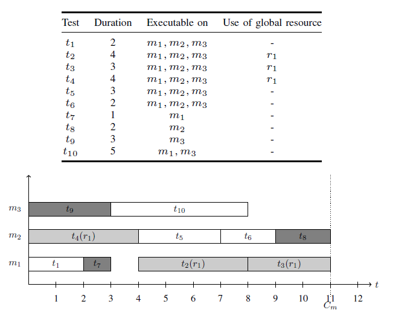

This work is licensed under a Creative Commons Attribution 4.0 International License.
This work is licensed under a Creative Commons Attribution 4.0 International License. Proposed by Morten Mossige
The problem was presented as the Industrial Modelling Challenge at CP2015.
The problem arises in the context of a testing facility. A number of tests have to be performed in minimal time. Each test has a given duration and needs to run on one machine. While the test is running on a machine, no other test can use that machine. Some tests can only be assigned to a subset of the machines, for others you can use any available machine. For some tests, additional, possibly more than one, global resources are needed. While those resources are used for a test, no other test can use the resource. The objective is to finish the set of all tests as quickly as possible, i.e. all start times should be non-negative, and makespan should be minimized. The makespan is the difference between the start of the earliest test, and the end of the latest finishing test. The objective of the original industrial problem is to minimize the time required to find a schedule plus the time required to run that schedule, i.e. to minimize the time between the release of the dataset and the conclusion of all tests required. As this objective depends on the speed of the machine(s) on which the schedule is generated, it is hard to compare results in an objective fashion.
An example solution is shown below:

The description of the Industrial Modelling Challenge is given here. The document describes the initial data format which is given in Prolog syntax.
This work is licensed under a Creative Commons Attribution 4.0 International License.